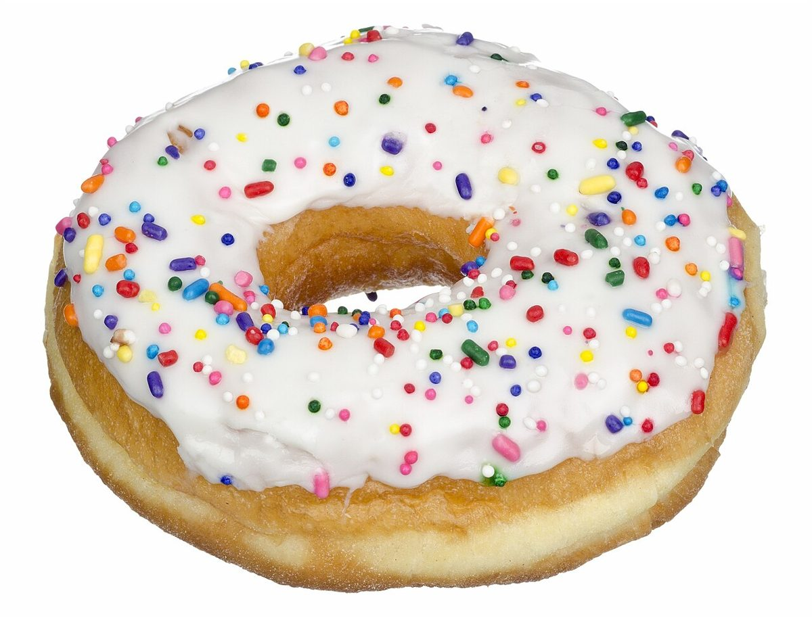
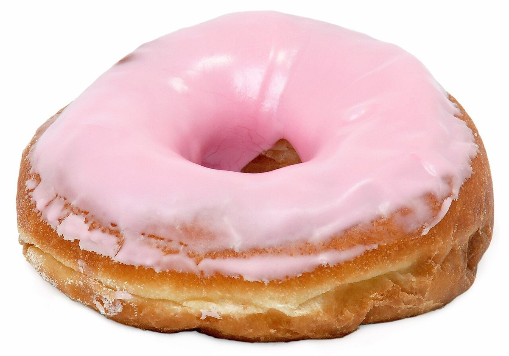
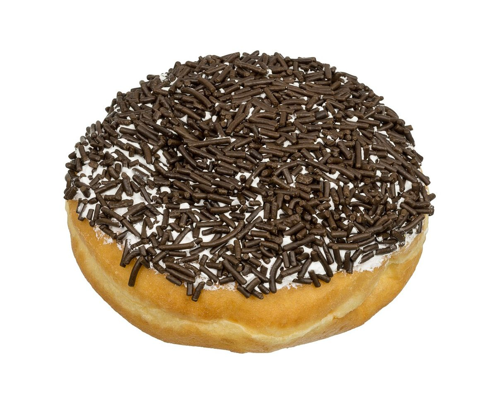

制作側の連想
「ちょん」の点を、ページの数だけ
制作側は店名の響きから、ペンで「ちょん」と点を打つ音を連想しました。そこでこのサイトは、ページ番号と同じ数の点を打って進む「点描帖」にしています。ホームは点ひとつ、アクセスは点五つ。画面上部の丸い印がその数です。お店の理念や店名の由来とは無関係な、制作側の連想です。
点描ギャラリー(イメージ)
丸いものを、ちょん、ちょん、ちょん。
写真はお店のものではなく、国外または撮影地不明のフリー素材です。お店・商品を写したものではありません。




ご案内
お店のこと(確認できたものだけ)
| 所在地 | 〒523-0891 滋賀県近江八幡市鷹飼町1490 |
|---|---|
| 電話 | 050-8880-7668 |
| 営業時間 | 準備中 |
| 定休日 | 準備中 |
| ご予約 | 準備中 |
| 駐車場 | 準備中 |
| SNS | Instagram @chonne_donut |